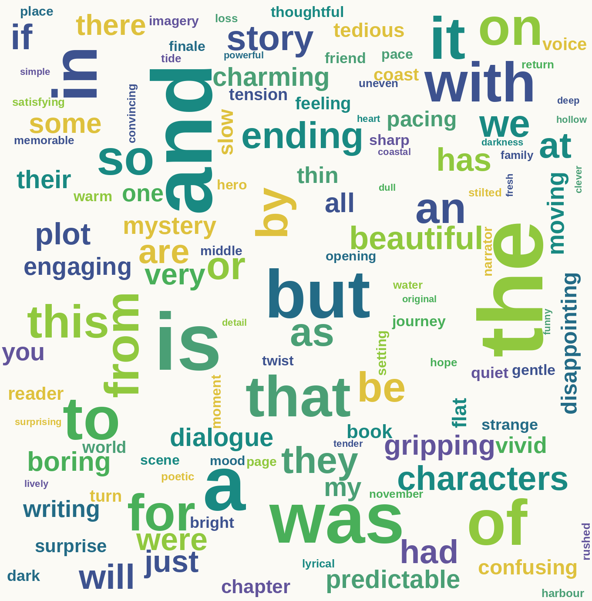
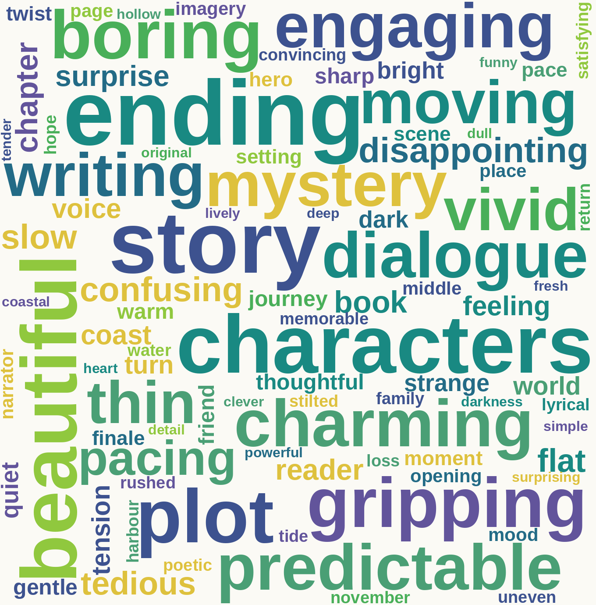

Collect
Reviews and book details are different kinds of input. Keep the source and meaning attached.
Natural language processing · recommender systems
One review carries an opinion signal
Signals help us group, predict, and suggest.
Follow a bookshop review from raw text to a book suggestion. NLP turns the words into features a model can use. A recommender draws on book descriptions, reader choices, or both. The examples show how the steps connect.
People write reviews in their own words. A model usually needs numbers arranged in a consistent shape. The first job is to represent each review or book with useful features; the next job is to use those features or behaviour records to answer a question.
Reviews and book details are different kinds of input. Keep the source and meaning attached.
Turn selected words, phrases, or book details into numerical features.
Group similar texts, predict a label, or compare people, books, and interests.
Does the output match the task and help a real reader? Check errors and unintended effects.
Remember this: a feature is a column you’ve chosen to measure about each row in your data — one detail, turned into a number. In a review, that might be as simple as counting how many times the word “ending” shows up. It’s not the answer you’re trying to guess, like whether someone liked the book — that’s a different thing, called the label, or target.
Each listed positive word adds one point and each negative word subtracts one. A score above zero is “Liked”; zero or below is “Not liked”.
X is each review; y is its label.
beautiful · gripping · charming · engaging · moving · vivid
boring · thin · predictable · disappointing · confusing · slow · flat · tedious
Six books and their reviews. The signed opinion words are listed for each; add them for the net score, which sets the teaching label.
| Book · review (X) | Signed opinion words | Net score | Teaching label (y) |
|---|---|---|---|
| Book A — The Long Return“The writing is beautiful; the ending is gripping.” | beautiful: +1 · gripping: +1 | +2 | Liked |
| Book B — Bright Water“The characters are charming, and the dialogue is engaging.” | charming: +1 · engaging: +1 | +2 | Liked |
| Book C — Harbor Lights“The story is moving and vivid, but the ending is predictable.” | moving: +1 · vivid: +1 · predictable: −1 | +1 | Liked |
| Book D — The Salt Line“The plot is thin, and the ending is boring.” | thin: −1 · boring: −1 | −2 | Not liked |
| Book E — Low Tide“The mystery was disappointing and confusing.” | disappointing: −1 · confusing: −1 | −2 | Not liked |
| Book F — Grey November“The pacing is slow, flat, and tedious.” | slow: −1 · flat: −1 · tedious: −1 | −3 | Not liked |
Each sentence in X stays beside its score-based teaching label in y.
A text transformer learns the training vocabulary and makes the same feature columns for each review.
A classifier fits the count rows together with y. It learns a pattern linking words to the score-based labels.
Reuse the fitted steps on a new review, then return a predicted label.
Here, CountVectorizer is the transformer. Its .fit(X) learns which word columns to use; its .transform(X) fills those columns with counts. For Book A, two of the non-zero values are beautiful: 1 and gripping: 1.
The fitted transformer keeps that same vocabulary for later reviews, so every row has the same columns.
.fit() and .predict() do?The classifier’s .fit(X_counts, y) learns a pattern between numeric count rows and the known labels. It is the final estimator: the step that learns this pattern and returns the prediction. The pipeline’s .fit(X, y) first fits and uses the transformer, then fits that estimator.
For a new review, pipeline.predict(["the writing is beautiful"]) reuses the learned columns, including beautiful: 1, and returns a predicted label — Liked, in this case.
Why fit on training rows? Learn the vocabulary from the training reviews, then use .transform() with those same columns on held-out reviews. Learning any part of the conversion from test rows would let information from the check set leak into training.
What’s the handoff? In this example, the pipeline receives raw review text as X — but the classifier itself never sees the words. It only sees the transformed count numbers that come out of the step before it. y is used while fitting; it isn’t supplied when predicting something new. Six rows are still far too few for a useful model, so this shows the route, not a trustworthy result.
beautiful, gripping, and the rest sit on both sides of this example. That is not how a real labelled dataset works: a genuine label usually comes from something independent of the review text, such as a reader’s star rating or a thumbs up, which is what actually gives a classifier something new to learn. With six hand-scored rows built this way, the “model” can only really recover the rule that built it.Source anchor: the LMS section “ML Pipeline and ML tasks” introduces the chained transformer-and-model workflow.
Come back to three of the six books from section 02: Book A, Book C, and Book D. They’re picked out because all three reviews use the word “ending” — the others don’t — which makes them useful for the next step. Count their words instead of scoring their opinions, and watch what happens to the one word all three share. The table makes one column for each word in their combined vocabulary and records how often it appears in each review.
The same three reviews as Book A, Book C, and Book D in section 02, now counted instead of scored. Eleven words appear across them.
| Book | beautiful | boring | ending | gripping | moving | plot | predictable | story | thin | vivid | writing |
|---|---|---|---|---|---|---|---|---|---|---|---|
| Book A | 1 | 0 | 1 | 1 | 0 | 0 | 0 | 0 | 0 | 0 | 1 |
| Book C | 0 | 0 | 1 | 0 | 1 | 0 | 1 | 1 | 0 | 1 | 0 |
| Book D | 0 | 1 | 1 | 0 | 0 | 1 | 0 | 0 | 1 | 0 | 0 |
TF-IDF for the same three books and eleven terms. Values use scikit-learn’s default smoothed inverse-document weighting and row scaling (the squared values in each row add to about 1); rounded to three decimals.
| Book | beautiful | boring | ending | gripping | moving | plot | predictable | story | thin | vivid | writing |
|---|---|---|---|---|---|---|---|---|---|---|---|
| Book A | 0.546 | 0.000 | 0.323 | 0.546 | 0.000 | 0.000 | 0.000 | 0.000 | 0.000 | 0.000 | 0.546 |
| Book C | 0.000 | 0.000 | 0.283 | 0.000 | 0.479 | 0.000 | 0.479 | 0.479 | 0.000 | 0.479 | 0.000 |
| Book D | 0.000 | 0.546 | 0.323 | 0.000 | 0.000 | 0.546 | 0.000 | 0.000 | 0.546 | 0.000 | 0.000 |
Notice ending’s smaller weight: a word that turns up in every single review carries almost no power to tell them apart, so TF-IDF pushes it down hardest of all. Before the row is scaled, scikit-learn’s default gives ending a weight of about 1.0 because it appears in all three reviews; a one-review word like beautiful or thin gets about 1.693 instead. It then scales each row so the squared values add to about 1. In Book A, that leaves ending: 0.323 sitting well below beautiful: 0.546, gripping: 0.546, and writing: 0.546 — the same word, the same book, but a much smaller share of the signal. The exact values depend on the documents and vectorizer settings.
A text unit, such as a word or punctuation mark, chosen by a tokenizer.
A document represented by its word counts; ordinary word order is lost.
Rewards a word for repeating inside one document, but down-weights it if it also turns up in many other documents — a word that’s everywhere can’t help tell documents apart.
A fixed set of numerical feature values for one review or item.
Tokenising, removing common words, and reducing word forms can make a dataset easier to analyse. Each choice changes what the model is able to notice. Treat these as decisions to check against the task, not automatic housekeeping.
Watch stop-word filtering do its job: imagine a few more bookshop reviews like the ones already on this page. Count every word as it stands, and a handful of meaningless little words bury everything else. Remove just those words, and the real content rises to the top.
| Operation | What changes? | Question to ask |
|---|---|---|
| Tokenisation | Text is split into chosen units, such as words, word pieces, or sentences. | Do punctuation, apostrophes, names, or emoji carry information here? |
| Stop-word filtering | A selected list of frequent words is removed. | Could “not”, “without”, or a common domain word change the prediction? |
| Stemming | A rule strips word endings or beginnings to make rougher forms. | Could the shortened form merge words that should stay distinct? |
| Lemmatisation | A word is mapped toward a dictionary base form, using linguistic information. | Does the tool know the word’s part of speech and intended use? |

Output before filtering
stop_words = [
"the", "is", "and", "a",
"but", "was", "of", "in",
"to", "that", "so", "with",
"it", "on", "for", "from",
"this", "at", "by", "an",
"be", "as", "or", "if",
"not", "we", "they", "will",
...
]Filtering

Output after filtering
Illustrative frequencies from the six example reviews plus imagined bookshop reviews. Larger words appear more often; these images are not measured outputs from the six-row table.
“not good” and “good” share a word, but the first includes negation. A punctuation mark can change the tone. Two tokens can also be a person’s full name.
The same problem shows up with names: tokenising “Elena Frost” splits one person into two separate words, with nothing telling the model they belong together.
Stemming
A stemmer may map related words to a shortened stem that is not itself a normal dictionary word.
Lemmatisation
A lemmatiser may use word role and vocabulary to choose a base form. Neither guarantees that context or meaning is preserved.
Check the changed input: compare a few original messages with their processed tokens. If an important clue disappeared, revise the preprocessing before fitting a model.
Predicting a review’s label, in sections 02 to 04, was one kind of task. Comparing people, books, and interests — the other task section 01 named at the start — is a different one, and it draws on different evidence. Suppose Maya liked two of the books from section 02 — Bright Water and Harbor Lights, both set on the coast. The system may use the books’ descriptions and Maya’s own interests, or compare Maya’s reading pattern with other readers. These routes use different evidence.
| Book | Setting | Genre |
|---|---|---|
| Book B · Bright Water | Coastal | Literary fiction |
| Book C · Harbor Lights | Coastal | Literary fiction |
| Book E · Low Tide | Coastal | Mystery |
| Reader | Book B · Bright Water | Book C · Harbor Lights | Book E · Low Tide |
|---|---|---|---|
| Maya | Liked | Liked | Not yet seen |
| Leon | Not seen | Liked | Liked |
| Noor | Liked | Not yet seen | Not yet seen |
| Ava · new reader | No history | No history | No history |
Describe books with features—genre, setting, or words in the description—then compare candidates with Maya’s own interests. Which feature you match on changes the answer: by setting, all three books are coastal, so Low Tide looks like a fit. By genre, Bright Water and Harbor Lights are literary fiction and Low Tide is a mystery, so genre alone wouldn’t suggest it.
Evidence: Maya’s history and book properties.
Look for patterns in the reader–book table. If people with reading patterns like Maya’s also like a book she has not tried, that book becomes a candidate.
Evidence: interactions from many readers and books.
Same books, different feature, different answer: match on setting and Low Tide looks like a good suggestion for Maya — all three books are coastal. Match on genre instead and it doesn’t: Maya’s read two literary novels, and Low Tide is a mystery. Content-based filtering only ever answers the question you set it up to ask; picking the feature is picking the answer.
One possible collaborative clue: Noor and Maya both liked Bright Water. If Noor later likes another book, that is a candidate to consider for Maya. The tiny table is only an illustration; a real system needs more data, scoring, and careful evaluation.
“Content-based” means the system compares item characteristics with one reader’s interests. “Collaborative” means it learns from patterns across readers and items. A useful first check is: whose information does the recommendation use?
| Question | Content-based | Collaborative |
|---|---|---|
| Main evidence | Features of items plus one reader’s preferences or behaviour | Interactions across many readers and items |
| Can suggest an unfamiliar kind of item? | Only if its features connect to the reader’s known interests | Yes, when other readers with related patterns have chosen it |
| First-use weakness | Needs item features and some clue about the new reader | Has little evidence for a brand-new reader or item |
| Simple picture | “You liked these features; here is another item with related features.” | “Readers with a similar pattern also liked this item.” |
Find a manageable set of books worth considering.
Estimate how relevant each candidate is for this request.
Adjust the final order for goals such as variety or freshness.
Independent extension from Google’s ML guidance: a recommender is often a multi-stage system, not just one “filtering algorithm”.
The same system can recommend a good next read or repeat a narrow pattern. Check both what went into it and what people experience when it is used.
A new reader or new book has little interaction history to learn from.
Counts can miss negation, word order, tone, and the meaning of a phrase.
Similarity alone can keep recommending more of what is already familiar.
Clicks or ratings are only proxies; check whether the recommendation helps the intended user.
Cold-start example: look at Ava’s row in the interaction table in section 05. It contains no feedback to compare with Maya, Leon, or Noor.
From this table alone, collaborative filtering has no record of Ava’s choices, so it cannot infer which book she personally prefers. The blank history is missing evidence, not evidence that she dislikes every title.
It could show generally popular titles or ask Ava what she likes. If she chooses “coastal”, the book descriptions make Bright Water and Harbor Lights possible content-based matches. That is a starting clue, not a preference learned from her past clicks.
A reader likes one coastal novel. The system recommends another book because its description contains related words. Which route is this?
Reveal: content-based filtering. The clue is the match between the book’s features and this reader’s interest. If it were using the behaviour of similar readers, that would be collaborative filtering.
A word used in almost every review receives less weight than a word that distinguishes a smaller set of reviews. Did TF-IDF understand the review’s meaning?
Reveal: no. TF-IDF changed the numerical weight of word features. It did not interpret the review or infer meaning on its own.
The LMS transcript is preserved in raw-transcript.md; source-based corrections and extensions are explained in analysis-and-enrichment.md and recorded in primary-research.md.
CountVectorizer text-to-count API · text features, bag of words, and TF-IDF weightingTfidfVectorizer defaults, smoothed IDF, and row normalisationPipeline fit/transform/predict sequence · StandardScaler